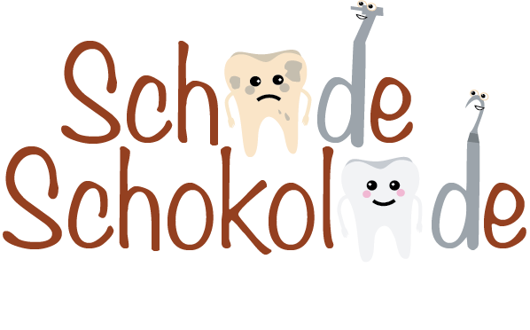

Willkommen bei
ein Studienprojekt von Mona Stingl und Lisa Waletzko
SCHADE SCHOKOLADE ist ein animierter Kurzfilm, der comedyhafte Aspekte beinhaltet und beim Zahnarzt im Behandlungsraum auf einem Fernseher gezeigt wird.

Zahnarztpraxis
60-80 % der Menschen in Deutschland haben Angst vor dem Zahnarztbesuch. Besonders Kinder sind davon betroffen und fangen oftmals an zu schreien und zu schlagen. Damit der Zahnarzt in Ruhe die Behandlung durchführen kann, zeigen wir den Kindern unseren Film. Außerdem gehen wir präventiv vor, d.h. wir gestalten den Besuch beim Zahnarzt so schön wie möglich, damit die Angst erst gar nicht entsteht.
Film
Kleine Kinder sind fasziniert von den bunten, bewegten Bildern und dem Sound von Filmen und werden so förmlich in den Bann der Geschichte gezogen. Gemeinsam mit den Held*innen ihrer Lieblingssendung erleben sie spannende Abenteuer und entdecken die Welt. Das Medium Film sorgt vor allem bei Kindern für Unterhaltung, Spaß und vertreibt Langeweile.
Comedy
Definition
Eine Komödie wird im Allgemeinen als ein Werk definiert, das zur Unterhaltung des Rezipienten dient. Hierbei werden die Inhalte übertrieben und amüsant dargestellt. In einer Komödie können Figuren durchaus Unglück erleiden, doch handelt es sich in der Regel um komödiantische Situationen mit positivem Ausgang. Die Rezipienten fühlen sich zu den Figuren auf der Bühne entweder hingezogen, weil sie sich in ihnen wiedererkennen oder sie blicken auf sie herab und machen sich über ihre Schwächen lustig (Literary Devices, 2022).
Warum Comedy?
Mit Comedy bringt man Menschen zum Lachen. Gerade kleine Kinder lachen etwa 400-mal am Tag und das fröhlich klingende Gekicher wird dabei schon durch lustige Grimassen oder komisch klingende Wörter ausgelöst. Sie fokussieren sich dabei auf etwas anderes als auf ihre Angst, denn Lachen hilft dabei, Distanz zu einer Situation zu gewinnen und somit die Umgebung zu vergessen. Mit dem Comedy-Aspekt lenken wir die Kinder von ihrer Angst ab, sodass sie sich beruhigen und sich für die Behandlung entspannen (Supro, o. D.).
Merkmale
Comedy zeichnet sich durch viele bunte, knallige Farben aus, die wir in unseren Illustrationen einbringen (Filmsprache, 2022).
Außerdem haben wir sprechende Gegenstände sowie Tiere und lustige Geräusche eingebaut.
Ella Kunte
Schülerin
Dresden, DE
Katze
Likes
Kontakt zu Freunden
Schokolade
Spiele
Dislikes
Zahnarztbesuche
Brokkoli
Langeweile
Persona
Ella Kunte ist 6 Jahre alt und lebt als Einzelkind mit ihren Eltern und ihrer Katze Tommy in Dresden. Sie liebt es in die Schule zu gehen und mit ihren Freunden zu spielen. Außerdem ist Ella ein sehr aufgeschlossenes und freundliches Mädchen.
Ziele
- Gute Noten
- Spaß
- Neue Dinge entdecken
Zielgruppe
Unsere Zielgruppe sind Kinder zwischen 3-7 Jahren, da Kinder bereits in diesen Jahren regelmäßig zum Zahnarzt gehen. Damit wir Kinder in dem Alter aber nicht überfordern, versuchen wir die Szenen nicht zu überladen und in gewissermaßen realitätsgetreu zu animieren. Vor allem ist es unserer Zielgruppe noch nicht möglich, eigene gedankliche Schlüsse zu ziehen, weil sie noch auf Erfahrungen zurückgreifen. Erst ab dem achten Lebensjahr fangen sie an, das logische Denken zu lernen und zu entwickeln (Kindererziehung, o. D., Abschn. 3. Kapitel).